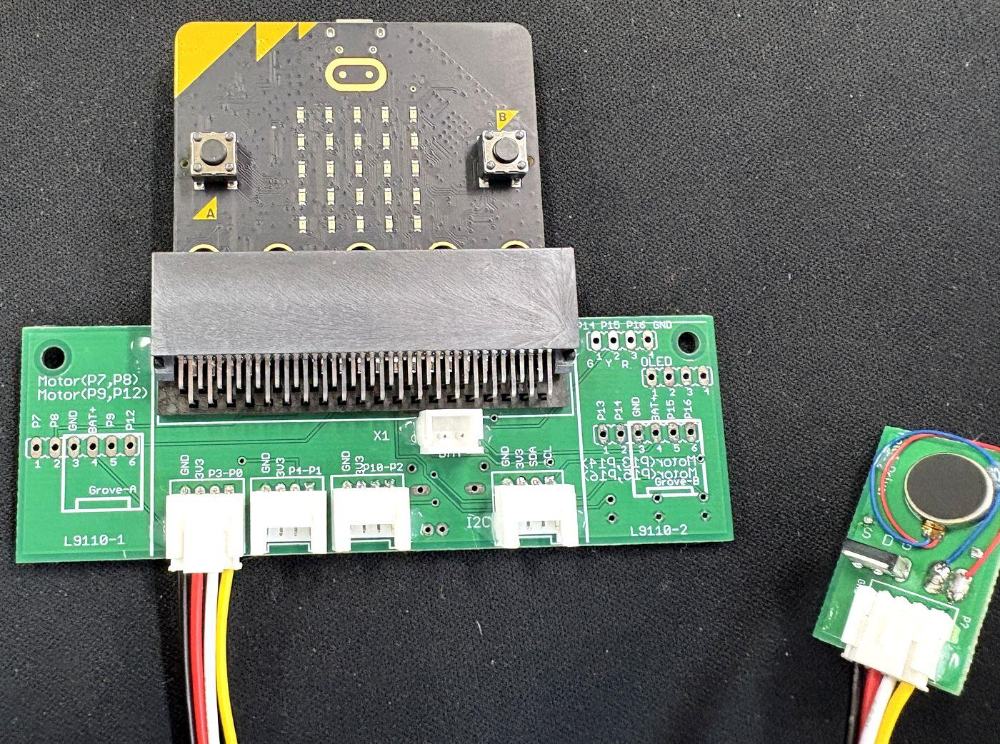
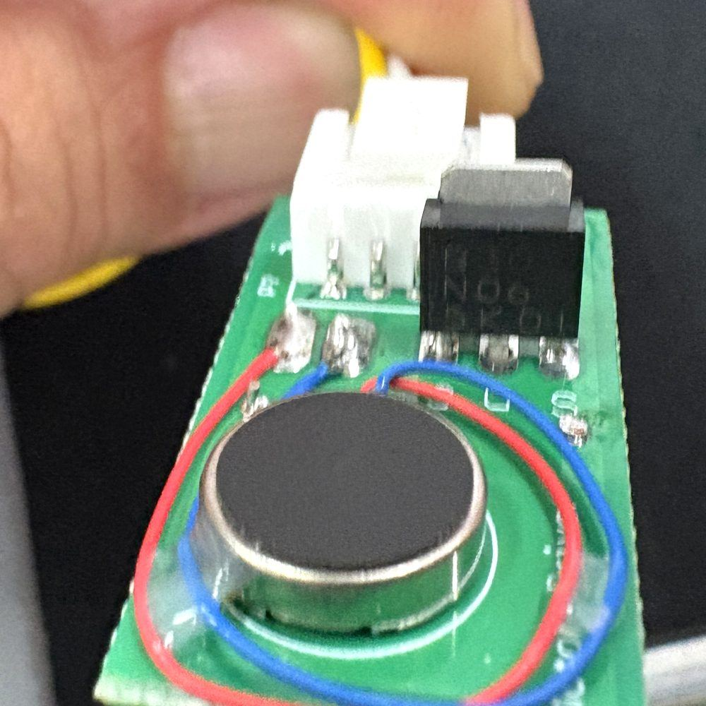

MOSFET（モスフェット）は、電圧で電流をあやつる部品。
むずかしそうだけど、まずは「水」で考えれば大丈夫。つまみを動かして、水を流してみよう。
左が「水の世界」、右が「電気の世界」。まったく同じことが、同時におきています。
つまみを右に動かすと、オレンジの水がたまっていくよ。水門はいつ動きはじめる？
端子（たんし）は、電線をつなぐ「出入口」のこと。名前は3つだけ。
流れをあやつる係。ここにかける電圧で、通り道をひらく。
本流の入口。電流はここから入ってくる。
本流の出口。電圧をはかるときの「基準」にもなる。
| 水の世界 | 電気の世界 | |
|---|---|---|
| 操作そうの水位（そこからの高さ） | → | GとSの電圧の差（VGS）＝ 操作の合図 |
| 本流をおす、水の圧力の差 | → | DとSの電圧の差 ＝ 本流をおす力 |
| 1秒あたりに流れる水の量 | → | 電流 ＝ 電気の流れる量 |
| 水車が回るいきおい | → | モーターの回転 |
電圧は、いつも「差」で考える。合図になるのは、ソースを基準にしたゲートの電圧。 これを VGS（ブイ・ジーエス）と書きます。
タップすると、続きが出てきます。「ためす」ボタンで、上の実験パネルが動きます。
ほんとうの中では、浮きも水門も動きません。
ゲートの電圧が 電界（でんかい：電気の力がはたらく空間） をつくり、そこに電気の通り道ができます。
ゲートと本流のあいだには、電気を通しにくいうすい膜（まく）があります。だから、
操作の水が本流に混ざらないのと同じで、ゲートの電気は本流に流れこみません。
水の模型は、ここまで。ここからは、実物の部品と、その中身をのぞいてみよう。
指の先くらいの小さな部品。足をタップすると、どの端子か分かります。
部品をうすく切った断面図。つまみを動かすと、中で何がおきているか見えます。
足の並びは、製品によってちがいます。 じっさいに使うときは、かならずその部品の説明書（データシート）で G・D・S を確認しよう。
マイクロビットの役目は、水を注ぐこと。つまり「ゲートに電圧をかける係」です。
じっさいに教室でつなぐ、そのままの姿です。番号の場所を見くらべてみよう。


写真から、つながり方が読みとれます。 Groveポートの刻印は左から「GND・3V3・P3-P0」。さしてあるケーブルの色も左から 黒・赤・白・黄。 つまり 黄＝P0（合図）／白＝P3（この基板では未使用）／赤＝3V3（電源）／黒＝GND。 下の図と、同じつながり方です。
マイクロビット → 拡張ボード → Groveケーブル → 出力アタッチメント基板 → モーター。この順に信号が進みます。
Groveケーブルの4本は、それぞれ役目がちがいます。
第1節と、まったく同じ話です。 オレンジの操作そう（黄の線）と、本流のタンク（赤の線）は別。 水門（MOSFET）が、赤い水の道を開け閉めしています。
マイクロビットの端子は、力もちではありません。
| くらべるもの | どれくらい | |
|---|---|---|
| マイクロビットの端子1本が出せる電流 | → | 数mA（強く設定しても15mAくらいまで） |
| ボード全体（エッジコネクタ）の合計 | → | 190mA まで（micro:bit V2 は 270mA まで） |
| 小さな振動モーターが必要とする電流 | → | 数十mA〜。回りはじめは、もっと大きい |
だから、端子でモーターを直接まわそうとしてはいけません。
MOSFETは「弱い合図で、太い道を開ける水門」。
マイクロビットは水門を開けるだけ、モーターを回す水は電源から来る——この役割分担が、制御のきほんです。
なおこの装置では、そのモーターの電流も USB からマイクロビットを通ってきています。
だから、上の 190mA（V2は270mA）という合計の中でやりくりすることになります。
アタッチメント基板の中身です。モーターの下がわに MOSFET を入れて、地面（GND）へ落とします。電源も、マイクロビット（USB）から。
教科書の回路図には、あと数点ついていることがあります。この装置では省いてあります。何のための部品で、いつ必要になるのかを知っておこう。
部品を減らすと、回路はすっきりして分かりやすくなります。そのかわり、「小さいモーターだから成り立っている」という前提がつきます。 つなぐ相手を大きくするときは、この前提がくずれる——という見方を持てると、もう立派な設計です。
MOSFETは「半開き」が苦手（熱くなる）。だから、速く開け閉めして平均で調節します。
// ON / OFF だけ pins.digitalWritePin(DigitalPin.P0, 1) pins.digitalWritePin(DigitalPin.P0, 0) // 速さを変える（PWM） pins.analogSetPeriod(AnalogPin.P0, 1000) pins.analogWritePin(AnalogPin.P0, 512)
from microbit import * # ON / OFF だけ pin0.write_digital(1) pin0.write_digital(0) # 速さを変える（PWM） pin0.set_analog_period(1) pin0.write_analog(512)
値は 0〜1023。周期は MakeCode がマイクロ秒、Python がミリ秒（最小1ms）で指定します。 モーターが「ピー」と鳴くときは、周期を短くしてみよう。
いちばんの落とし穴：マイクロビットは 3.3V しか出せません。
しきい値の高い MOSFET だと、3.3V では半開きのまま。回らない、または部品がとても熱くなります。
これは第3節「① 水がちょっとあるだけでは、ONにならない」そのもの。
ロジックレベル（3.3V でしっかり開くタイプ）の N チャネル MOSFET を選んでください。
データシートでは、しきい値 VGS(th) の値と、VGS＝2.5V や 3V のときの抵抗（RDS(on)）が書いてあるかを見るのが目印です。
そのほかの注意：MOSFETがさわれないほど熱いときは、すぐ電源を切る（半開きのサイン）。 モーターの電源とマイクロビットの電源は分け、GND だけを共通に。配線を変えるときは、かならず電池を外してから。
選ぶとすぐ答え合わせ。まちがえても大丈夫、実験パネルでたしかめよう。
0 / 3 問せいかい